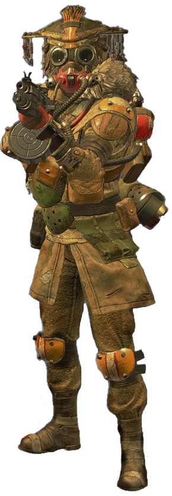

Bloodhound is known across the Outlands as one of the greatest game hunters the Frontier has ever seen. The child of two engineers stationed at the New Dawn industrial plant on Talos, Bloodhound was taken in by their uncle Artur after a meltdown destroyed the facility and killed both their parents. Artur taught them the Old Ways, a belief system that focuses on the glory of nature and rejects modern technology. Yet Bloodhound was constantly drawn to technological marvels, and ultimately used both new and old methods to take down a Goliath that preyed on the people of their village, forever changing their life’s path. Bloodhound’s unparalleled tracking skills are a boon to any team they join, helping them root out hidden opponents and track enemy movements. Calling on Earth’s Old Norse Gods to guide them, Bloodhound believes that destiny is a path that has already been laid out, eventually carrying all to their death. But with that knowledge comes strength, because until that day comes, Bloodhound knows they can’t be stopped.
